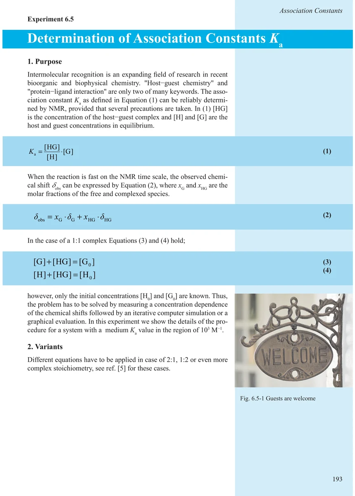
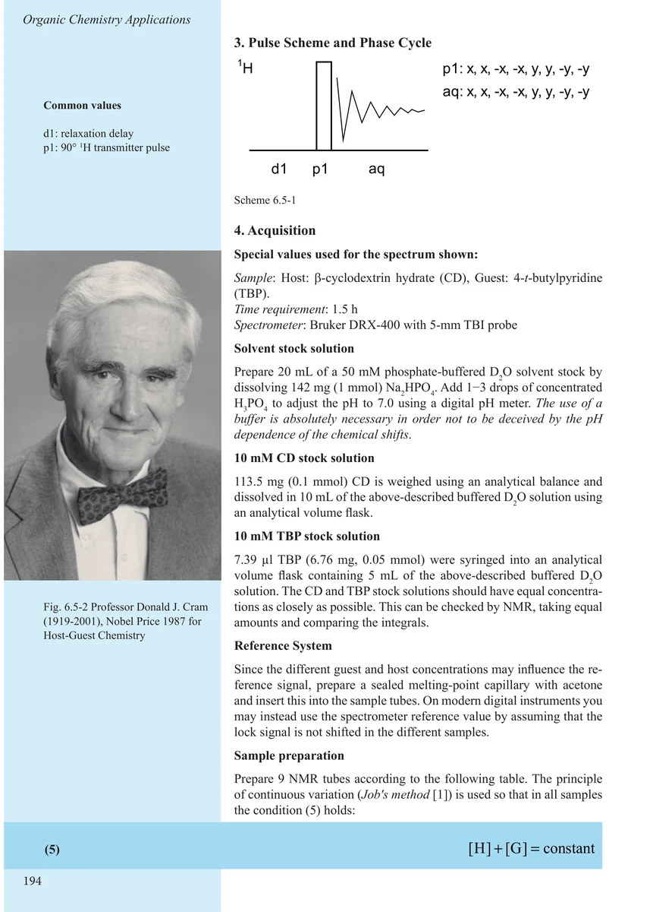
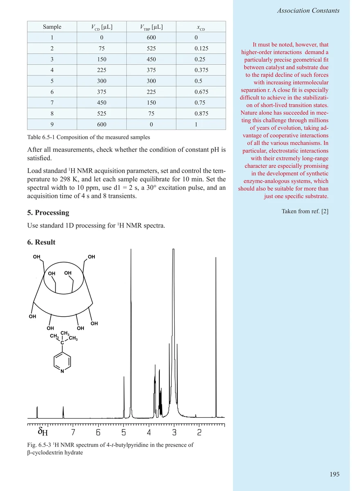
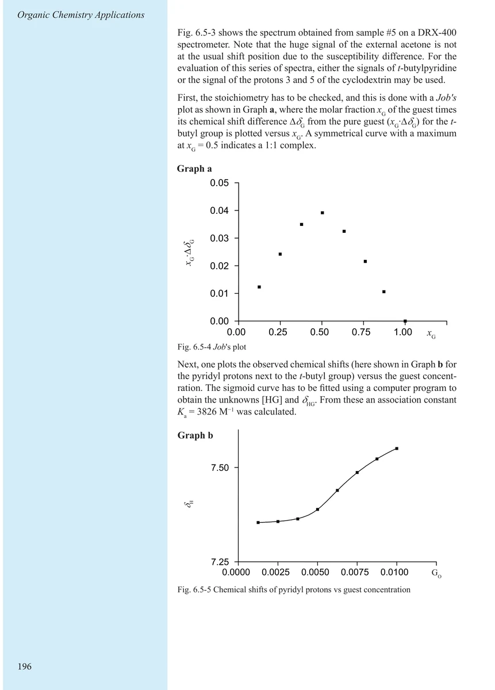
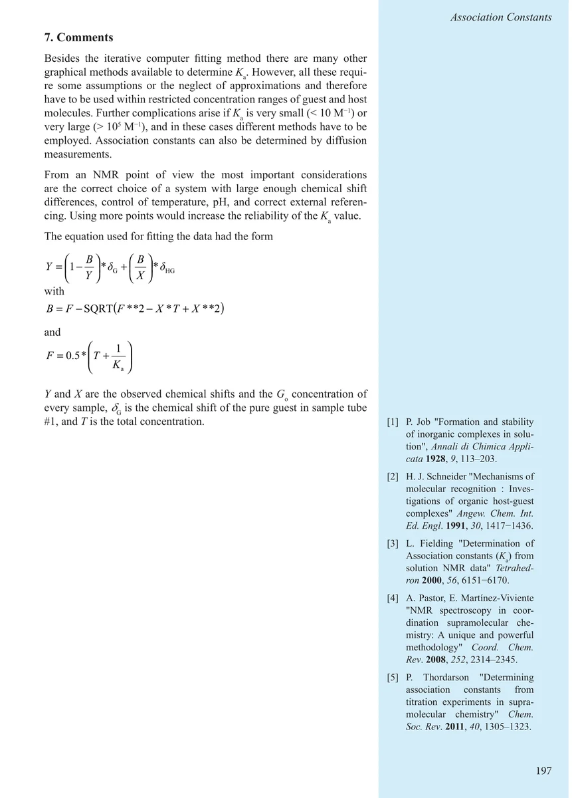
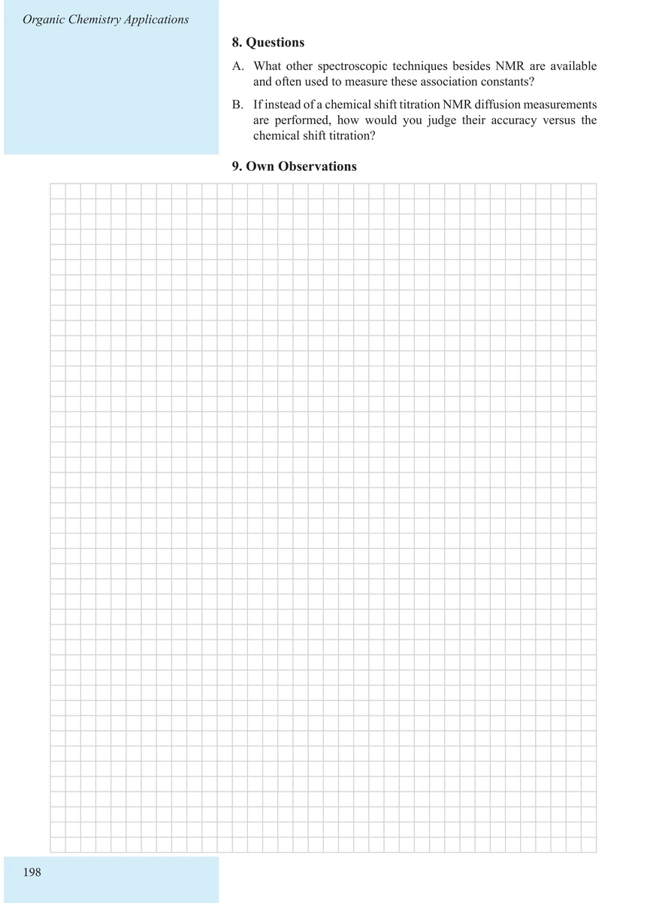

Item 6.5
Determination of Association Constants Ka
缔合常数 Kₐ 的测定
PDF 203–208 · 原书 193–198 · Organic Chemistry Applications






核磁共振实验方法、脉冲序列与谱图实践
Item 6.5
缔合常数 Kₐ 的测定
PDF 203–208 · 原书 193–198 · Organic Chemistry Applications





